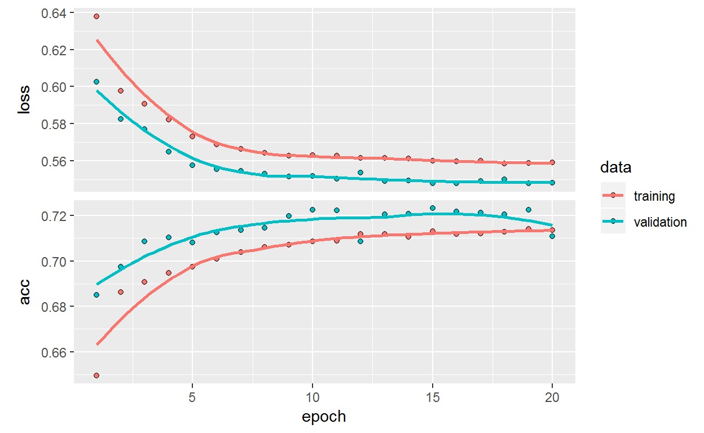
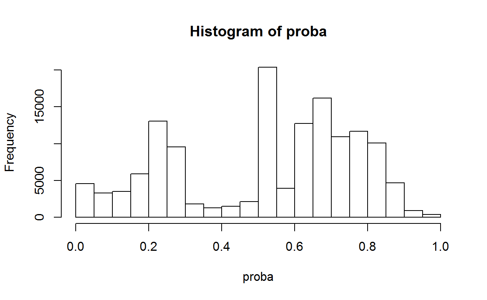
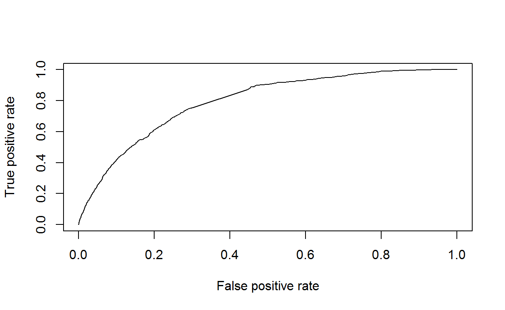
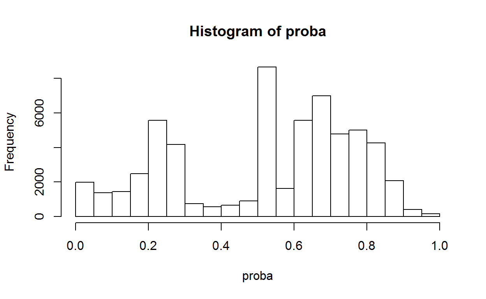
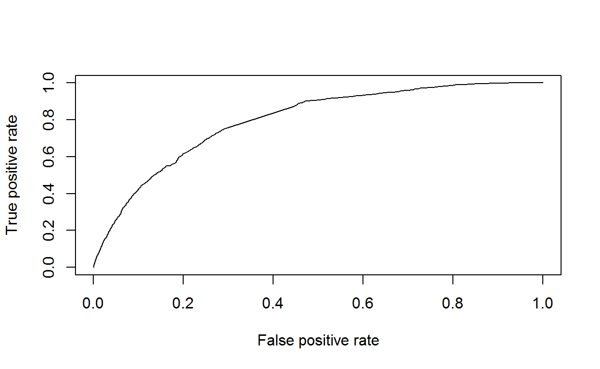

Using powerful Keras API to train a sequential neural network to classify default of loan car customer. This post is for beginner in deep learning, it’s a simple approach of deep learning for binary classification.
A credit risk is the risk of default on a debt that may arise from a borrower failing to make required payments. In the first resort, the risk is that of the lender and includes lost principal and interest, disruption to cash flows, and increased collection costs. We’ll focuse on retail banking area.
The dataset from Banque de France is composed of 10 features and 99.302 customers.
We’ll procede first to load packages and functions, and work on light data processing. At the end we’ll implement deep learning model and check output model indicators.
Packages: we load 5 packages for data processing, train deep learning model and indicators output
# packages
library(data.table) # for data processing
library(dummies) # for data processing
library(tensorflow) # for classification
library(keras) # for classification
library(ROCR) # to measure model performanceFunctions: functions for data processing & output model indicators
# compute lift
whatsMyLift <- function(score,cible, perc = 0.1,target){
n = ceiling(perc*length(score))
percentile = cible[order(score, decreasing = T)[1:n]]
length(percentile[percentile==target])/length(cible[cible==target])
}
# compute gini + lift
IndicatorsModels<-function(base,proba,target){
pred <- prediction(proba, FactorToBinNum(base$target,target))
perf <- performance(pred, measure = "tpr", x.measure = "fpr")
auc <- performance(pred, measure = "auc")
GiniIndex<-as.numeric(auc@y.values[[1]]*2-1)
plot(perf)
L5<-whatsMyLift(proba,base$target,perc=0.05,target)
L10<-whatsMyLift(proba,base$target,perc=0.1,target)
ResInd<-c(L5,L10,GiniIndex)
names(ResInd)<-c("Lift5","Lift10","gini")
round(ResInd*100,0)
}
# normalize vector
normalize <- function(x) {
((x - min(x)) / (max(x) - min(x)))
}
# transform vector
BinToFactor<-function(vect,NonTarget,target){
vect[vect==0]<-NonTarget
vect[vect==1]<-target
as.factor(vect)
}
# transform vector
FactorToBin<-function(vect,target){
vect<-as.character(vect)
vect[vect!=target]<-"0"
vect[vect==target]<-"1"
as.factor(vect)
}
# transform vector
FactorToBinNum<-function(vect,target){
vect<-as.character(vect)
vect[vect!=target]<-"0"
vect[vect==target]<-"1"
as.numeric(vect)
}
# split train/test
trainTestSplit <- function(df,trainPercent,seed1){
## sample size percent
samp_size <- floor(trainPercent/100 * nrow(df))
## set the seed
set.seed(seed1)
idx <- sample(seq_len(nrow(df)), size = samp_size)
idx
}
PropTable2<-function(vect){
round(prop.table(table(vect)),2)
}Reading credit risk dataset. We use fread function from data.table package (fast read).
path<-paste(getwd(),"data",sep="/")
data<-fread(paste(path,"dataset.csv",sep="/"),sep=";",stringsAsFactors = F,colClasses = "character")
data<-data.frame(data)Processing numerical & factor features. We’ll scale et replace NA value for numerical features, and dummies the categorical features.
# select data
ListNum<-c("amount","old.work","default","time","downpayment")
ListFact<-c("type","type.work","gender","working.sector","used.car")
# numerical features processing: NA & scale
DataNum<-data[,match(ListNum,names(data))]
for (i in 1:dim(DataNum)[2]){
col<-as.numeric(DataNum[,i])
col[is.na(col)]<-median(col[!is.na(col)])
col<-normalize(col)
DataNum[,i]<-col
}
str(DataNum)
'data.frame': 99392 obs. of 5 variables:
$ amount : num 0.506 0.509 0.449 0.503 0.405 ...
$ old.work : num 0.327 0.232 0.048 0.166 0.156 ...
$ default : num 0 0 0 0 0 0 0 0 0 0 ...
$ time : num 0.514 0.667 0.667 0.5 0.167 ...
$ downpayment: num 0 0 0.434 0 0.716 ...
# factor features processing
DataFact<-data[,match(ListFact,names(data))]
for (i in 1:dim(DataFact)[2]){
col<-as.factor(DataFact[,i])
DataFact[,i]<-col
}
str(DataFact)
'data.frame': 99392 obs. of 5 variables:
$ type : Factor w/ 2 levels "PRI","PRO": 2 2 1 2 1 1 1 2 2 1 ...
$ type.work : Factor w/ 17 levels "","0","10","11",..: 6 2 6 6 4 5 4 2 4 6 ...
$ gender : Factor w/ 7 levels "","C","D","M",..: 4 2 2 4 4 4 4 2 2 2 ...
$ working.sector: Factor w/ 17 levels "AGR","ATR","BTP",..: 10 1 2 10 3 4 2 1 3 2 ...
$ used.car : Factor w/ 2 levels "VN","VO": 1 1 1 1 1 1 1 1 1 1 ...
# decompose factor dataset on dummy
DataFact<-dummy.data.frame(DataFact,sep="-")Final dataset: merge between numerical and dummies features.
# final data
data<-data.frame(DataNum,DataFact)
# numerical format
for (i in 1:dim(data)[2]){
data[,i]<-as.numeric(data[,i])
}Define the target: we just rename the target.
# define target
names(data)[match("default",names(data))]<-"target"
# target proportion
PropTable2(data$target)
vect
0 1
0.98 0.02 We see umbalanced data, we have two ways here: first we work with umbalanced data on the algorithm or we work now on the data to get balanced.
We have to deal with the umbalanced dataset: we’ll generate artifical data to get balanced.
# take umbalanced data
DataTarget<-data[data$target==1,]
d1<-dim(DataTarget)[1]
d2<-dim(data)[1]
t<-round(d2/d1,0)
res<-NULL
for (i in 1:t){
res<-rbind(res,DataTarget)
}
data<-rbind(data,res)
# mixed data
Random<-557
data_idx<-trainTestSplit(data,100,Random)
data<-data[data_idx,]
# proportion with balanced data
PropTable2(data$target)
vect
0 1
0.49 0.51 We just rename the target as “Default” or “NonDefault”
# named target
NonTarget<-"NonDefault"
target<-"default"
# change target to names
data$target<-BinToFactor(data$target,NonTarget,target)Split train/test set: we take 70% of train and 30% of test set
# named target
NonTarget<-"NonDefault"
target<-"default"
# change target to names
data$target<-BinToFactor(data$target,NonTarget,target)
# train and test
Random<-558
train_idx <- trainTestSplit(data,70,Random)
train <- data[train_idx, ]
test <- data[-train_idx, ]
# check target proportion on train/test dataset
r1<-PropTable2(train$target)
r2<-PropTable2(test$target)
r3<-rbind(r1,r2)
rownames(r3)<-c("train","test")
print(r3)
default NonDefault
train 0.51 0.49
test 0.51 0.49Processing final data for tensorflow format model
# match target
mTarget<-match("target",names(data))
# data processing for tensorflow
x_train <- data.matrix(train[,-mTarget])
x_test <- data.matrix(test[,-mTarget])
y_train <- as.numeric(FactorToBin(train$target,target))-1
y_train <- to_categorical(y_train, 2)
y_test <- as.numeric(FactorToBin(test$target,target))-1
y_test <- to_categorical(y_test, 2)Set up sequential neural network model using Keras API. The sequential model makes the assumption that the network has exactly one input and exactly one output, and that it consists of a linear stack of layers.
# dimension dataset
d<-dim(train)[2]-1
# set up model
model <- keras_model_sequential()
model %>%
layer_dense(units = 5, activation = 'relu', input_shape = d) %>%
layer_dropout(rate = 0.1) %>%
layer_dense(units = 7, activation = 'relu', input_shape = d) %>%
layer_dropout(rate = 0.1) %>%
layer_dense(units = 7, activation = 'relu', input_shape = d) %>%
layer_dropout(rate = 0.1) %>%
layer_dense(units = 2, activation = 'softmax')
# compile model
model %>% compile(
loss = 'categorical_crossentropy',
optimizer = optimizer_rmsprop(),
metrics = 'accuracy'
)
print(model)
Model
______________________________________________________________________
Layer (type) Output Shape Param #
======================================================================
dense_1 (Dense) (None, 5) 250
______________________________________________________________________
dropout_1 (Dropout) (None, 5) 0
______________________________________________________________________
dense_2 (Dense) (None, 7) 42
______________________________________________________________________
dropout_2 (Dropout) (None, 7) 0
______________________________________________________________________
dense_3 (Dense) (None, 7) 56
______________________________________________________________________
dropout_3 (Dropout) (None, 7) 0
______________________________________________________________________
dense_4 (Dense) (None, 2) 16
======================================================================
Total params: 364
Trainable params: 364
Non-trainable params: 0
______________________________________________________________________
# fit model
history <- model %>% fit(
x_train, y_train,
epochs = 20, batch_size = 100,
validation_split = 0.2
)
print(history)
Trained on 110,964 samples, validated on 27,742 samples (batch_size=100, epochs=20)
Final epoch (plot to see history):
val_loss: 0.5481
val_acc: 0.7107
loss: 0.559
acc: 0.7135 Result of training
plot(history)
AUC is common metric on credit risk: AUC is area under the curve, In a ROC curve the true positive rate (Sensitivity) is plotted in function of the false positive rate (100-Specificity) for different cut-off points of a parameter. We’ll compute gini index: gini = 2*AUC-1.
model %>% evaluate(x_test, y_test)
$loss
[1] 0.5422537
$acc
[1] 0.7153551
proba<-model %>% predict_proba(x_train)
proba<-proba[,2]
hist(proba)
ResTrain<-IndicatorsModels(train,proba,target)["gini"]
proba<-model %>% predict_proba(x_test)
proba<-proba[,2]
hist(proba)
ResTest<-IndicatorsModels(test,proba,target)["gini"]
res<-rbind(ResTrain,ResTest)
rownames(res)<-c("train","test")
print(res)
gini
train 59
test 59The gini index for train set is very close to test set, it’s a good thing. But the value of the index is bigger than 50%, it’s good result. Our model have a good predictive ability.
This example show how to use Keras API for binary classification and to measure the model performance with AUC.
If you see mistakes or want to suggest changes, please create an issue on the source repository.
Text and figures are licensed under Creative Commons Attribution CC BY 4.0. Source code is available at https://github.com/dsaada/CreditRiskTensorFlow/, unless otherwise noted. The figures that have been reused from other sources don't fall under this license and can be recognized by a note in their caption: "Figure from ...".